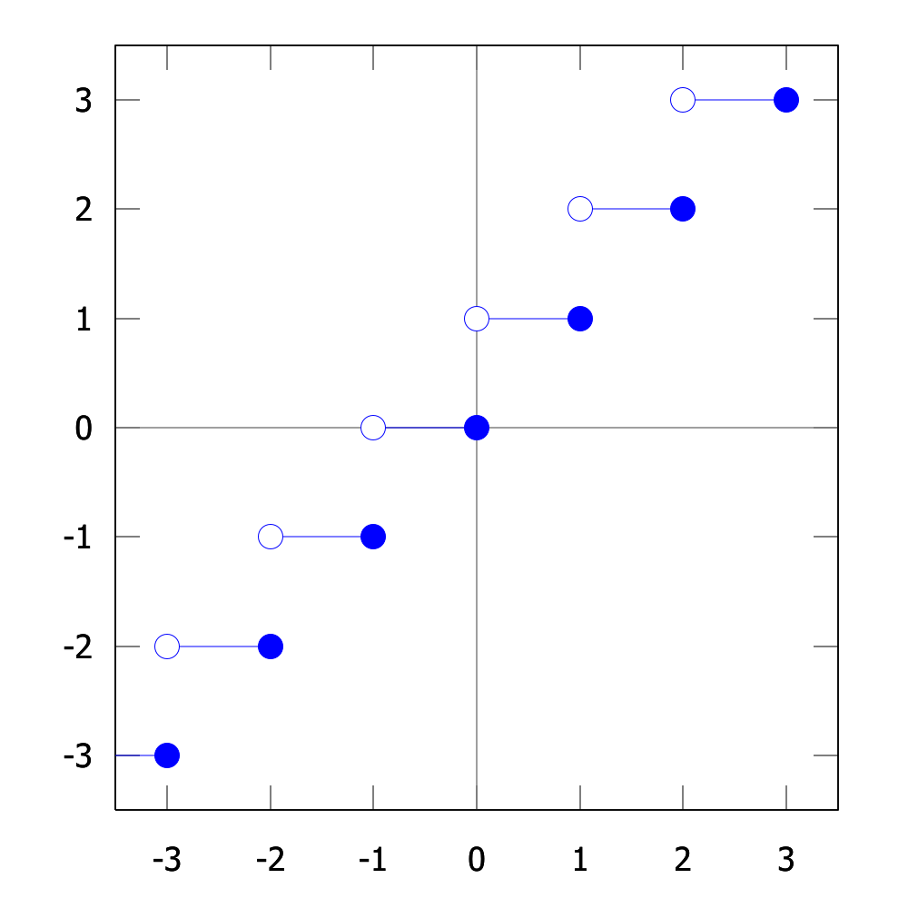

Définition 5.1 (Fonction) Une fonction\(f\) d’un ensemble \(A\) vers un ensemble \(B\) est une règle qui, à chaque élément \(a\) de l’ensemble \(A\), associe un et un seul élément \(b\) de l’ensemble \(B\). Cet élément \(b\) est noté \(f(a)\). On écrit parfois \((a,b)\in f\).
La notation usuelle pour désigner une fonction \(f\) d’un ensemble \(A\) vers un ensemble \(B\) est \[
f:A\rightarrow B
\] L’ensemble \(A\) est appelé le domaine de la fonction \(f\), noté \(\mathbf{dom} (f)\), et le sous-ensemble \(B\) formé des éléments atteints par \(f\) est appelé l’image de \(f\), noté \(\mathbf{ima} (f)\). \[
\mathbf{ima} (f) = \set{b\in B\ \mid\ \exists a\in A,\ f(a)=b} \subseteq B
\]
Par ailleurs, on peut aussi voir une fonction \(f\) de \(A\) vers \(B\) comme un sous-ensemble du produit cartésien \(A\times B\) ayant la propriété suivante: \[
\forall\ a\in A,\ \exists !b\in B,\ (a,b)\in f
\] où le symbole \(\exists !\) désigne il existe un et un seul.
Exemple 5.1 Considérons \(T_8\), l’ensemble des trains de bits de longueur 8 et la fonction \(f:T_8\rightarrow \mathbb{N}\) définie par \[
f(t)=\text{nombre de 0 dans le train de bits}\ t
\] Par exemple, \(f(1100\ 1011)=3\). Donnez le domaine et l’image de la fonction \(f\).
5.1 Fonctions plancher et plafond
Définition 5.2 (Fonctions plancher et plafond) La fonction plancher associe à tout nombre réel \(x\), le plus grand entier \(n\) tel que \(n\leq x\). On note \(\lfloor x\rfloor = n\). La fonction plafond associe à tout nombre réel \(x\), le plus petit entier \(n\) tel que \(n\geq x\). On note \(\lceil x \rceil = n\).
\(x-1<\lfloor x\rfloor \leq x \leq \lceil x \rceil < x+1\)
La Figure 5.1 présente le graphique des fonctions plancher et plafond.
Fonction plancher

Fonction plafond
Figure 5.1: Les fonctions plancher et plafond.
Ces deux fonctions sont accessibles dans Python en utilisant la librairie math, sous le nom de floor (fonction plancher) et ceil (fonction plafond).
import mathprint("Résultats de la fonction plafond")print(math.ceil(1.4))print(math.ceil(5.3))print(math.ceil(-5.3))print(math.ceil(22.6))print(math.ceil(10.0))print("Résultats de la fonction plancher")print(math.floor(1.4))print(math.floor(5.3))print(math.floor(-5.3))print(math.floor(22.6))print(math.floor(10.0))
Résultats de la fonction plafond
2
6
-5
23
10
Résultats de la fonction plancher
1
5
-6
22
10
A checksum is used to determine if something is the same.
If you have download a file, you can never be sure if it got corrupted on the way to your machine. You can use cksum to calculate a checksum (based on CRC-32) of the copy you now have and can then compare it to the checksum the file should have. This is how you check for file integrity.
A hash function is used to map data to other data of fixed size. A perfect hash function is injective, so there are no collisions. Every input has one fixed output.
A cryptographic hash function is used for verification. With a cryptographic hash function you should to not be able to compute the original input.
A very common use case is password hashing. This allows the verification of a password without having to save the password itself. A service provider only saves a hash of a password and is not able to compute the original password. If the database of password hashes gets compromised, an attacker should not be able to compute these passwords as well. This is not the case, because there are strong and weak algorithms for password hashing. You can find more on that on this very site.
TL;DR:
Checksums are used to compare two pieces of information to check if two parties have exactly the same thing.
Hashes are used (in cryptography) to verify something, but this time, deliberately only one party has access to the data that has to be verified, while the other party only has access to the hash.
5.3 Injection, surjection et bijection
Définition 5.3 (Fonction injective, surjective, bijective) Soit \(f:A\rightarrow B\) une fonction. On dit que
\(f\) est injective si elle n’associe jamais la même image à deux éléments distincts: \[
\forall\ a_1 \in A,\ \forall\ a_2 \in A,\ (a_1\neq a_2) \rightarrow (f(a_1) \neq f(a_2))
\]
\(f\) est surjective si son image est l’ensemble \(B\) au complet, c’est-à-dire si tous les éléments de \(B\) sont atteints: \[
\forall\ b\in B,\ \exists\ a \in A,\ f(a)=b
\]
\(f\) est bijective si elle est injective et surjective: \[
\forall\ b\in B,\ \exists! a\in A,\ f(a)=b
\]
Important
Si une fonction n’est pas injective, alors elle ne possède pas d’inverse.
Important
Si une fonction n’est pas surjective, alors elle ne possède pas d’inverse.
Exemple 5.4 On considère un sous-ensemble \(f\) du produit cartésien de deux ensembles. Dans chaque cas, tracez son graphe saggital puis déterminez s’il s’agit d’une fonction ou non. De plus, si \(f\) est une fonction, déterminez si elle est injective, surjective ou bijective.
Ici, \(L=\set{a,b,c,d,e}\), \(M=\set{a,b,c}\), \(C=\set{1,2,3,4}\) et \(D=\set{1,2,3}\).
\(f=\set{(1,a),(2,d),(3,c),(4,e)}\subseteq C \times L\)
\(f=\set{(1,a),(2,a),(3,c),(4,b)}\subseteq C \times M\)
\(f=\set{(1,a),(2,d),(3,c),(4,e),(1,b)}\subseteq C \times L\)
\(f=\set{(1,c),(2,a),(3,a),(4,a)}\subseteq D \times M\)
\(f=\set{(1,a),(2,a),(3,a),(4,a)}\subseteq C \times L\)
Exemple 5.5 La fonction \(f:\mathbb{Z}\times\mathbb{Z}\rightarrow \mathbb{Z}\) définie par \(f(x_1,x_2)=x_1+x^2\) est-elle oui on non injective? Est-elle oui ou non surjective? Est-elle oui ou non bijective?
5.3.1 Les dictionnaires dans Python
Le dictionnaire n’est pas une séquence mais un autre type composite. Ils ressemblent aux listes dans une certaine mesure (ils sont modifiables comme elles), mais les éléments que nous allons y enregistrer ne seront pas disposés dans un ordre immuable. En revanche, nous pourrons accéder à n’importe lequel d’entre eux à l’aide d’un index spécifique que l’on appellera une clé, laquelle pourra être alphabétique, numérique, ou même d’un type composite sous certaines conditions.
Exemple 5.6 Dites si le dictionnaire défini ci-dessous est une fonction injective, surjective, ou bijective.
Une fonction de hachage est une fonction qui associe des données de taille arbitraire à des valeurs de taille fixe. Les valeurs renvoyées par une fonction de hachage sont appelées valeurs de hachage, codes de hachage, résumés, signatures ou simplement hachages. Les valeurs sont généralement utilisées pour être les indices d’une table de taille raisonnable appelée table de hachage. Le hachage ou adressage de stockage dispersé est donc l’utilisation d’une fonction de hachage pour créer les indices d’une table de hachage.
Les fonctions de hachage sont utilisées dans les applications de stockage et de récupération de données pour accéder aux données en un temps réduit, en fait quasi-constant. Elles requièrent un espace de stockage à peine plus grand que l’espace total requis pour les données. Ainsi, le hachage est une forme d’accès aux données efficace en termes de calcul et d’espace de stockage.
L’intérêt des fonctions de hachage repose sur de bonnes propriétés statistiques. En effet, le comportement dans le pire des cas est mauvais, mais il se manifeste avec une probabilité extrêmement faible, en fait négligeable, et le comportement dans le cas moyen est optimal (collision minimale ).
Une fonction de hachage est typiquement une fonction qui, pour un ensemble de très grande taille (théoriquement infini) et de nature très diversifiée, va renvoyer des résultats aux spécifications précises (en général des chaînes de caractère de taille limitée ou fixe) optimisées pour des applications particulières. Les chaînes permettent d’établir des relations (égalité, égalité probable, non-égalité, ordre…) entre les objets de départ sans accéder directement à ces derniers, en général soit pour des questions d’optimisation (la taille des objets de départ nuit aux performances), soit pour des questions de confidentialité.
Autrement dit : à 1 fichier (ou à 1 mot) va correspondre une signature unique (le résultat de la fonction de hachage).
Important
Dans l’idéal, une fonction de hachage devrait être injective.
On peut trouver le haché d’un élément en Python en utilisant la commande hash. On peut remarquer dans le code ci-dessous que de changer une lettre minuscule en lettre majuscule (le F de fromage) change drastiquement le haché.
phrase1 ="Maître Corbeau, sur un arbre perché, Tenait en son bec un fromage."phrase2 ="Maître Corbeau, sur un arbre perché, Tenait en son bec un Fromage."print(hex(hash(phrase1)), hex(hash(phrase2)))